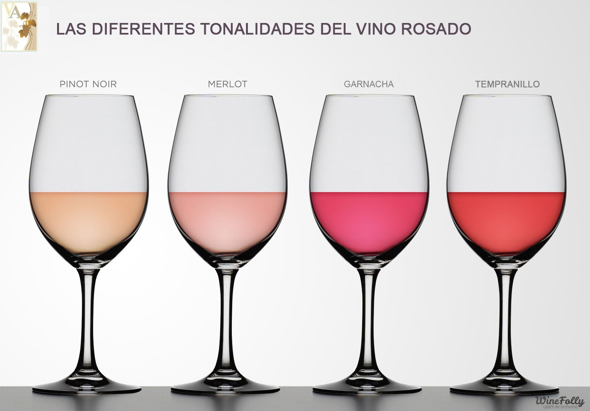
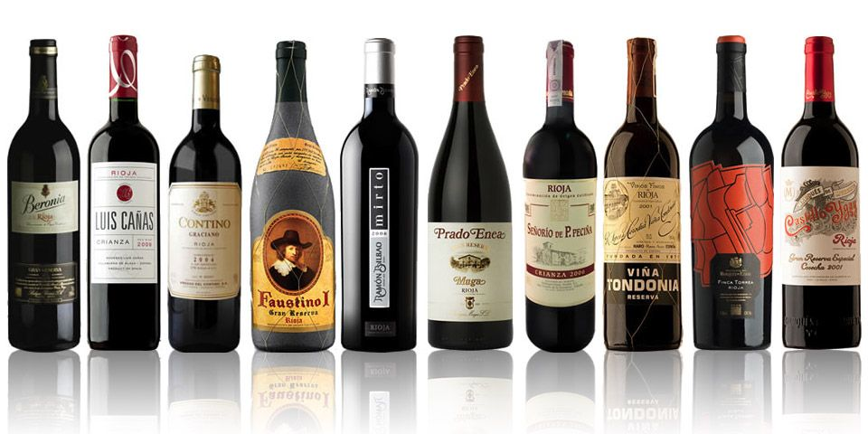
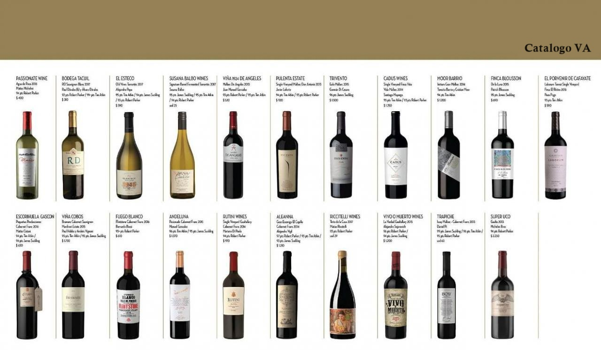

Estos son
nuestros productos
Nuestra Variedad
Una cepa es una variedad de uva con características particulares que influyen en el sabor, aroma y cuerpo del vino. Cada cepa tiene sus propias cualidades y se cultiva en diferentes regiones del mundo.
Productos
Las copas y el Vino
El cambio climático está transformando muchos aspectos de nuestra vida, y la industria del vino no es la excepción. Los viñedos en todo el mundo están experimentando cambios significativos que afectan tanto la producción como la calidad del vino. Estos desafíos también traen oportunidades para ciertas regiones.
Maridaje

La elaboración del vino o vinificación es el conjunto de procesos que transforman el mosto en una bebida alcohólica denominada vino. El proceso principal por el que ocurre esta transformación es la fermentación alcohólica. La elaboración del vino comienza con el prensado de la uva para la obtención del mosto y acaba exactamente en las operaciones de embotellado.
descargá
nuestro catalogo
Cata-logo online
comprá los mejores vinos en nuestra vinoteca online. Facil,simple y rapido.
Productos
Las copas y el Vino
Un buen maridaje, para el que a continuación mostramos algunos detalles, va más allá de la clásica fórmula de acompañar las carnes con tinto y los pescados con vino blanco. Las nuevas variedades de uvas, el incremento en el número de bodegas y el interés creciente por la enología y la cultura gastronómica han hecho que el proceso del maridaje se enriquezca enormemente. Por este motivo, os ofrecemos algunas claves o normas que ayudan a seleccionar el mejor vino para el plato que quieras disfrutar, y hacer de esta experiencia combinada todo un deleite para el paladar.
Maridaje
El peso de los alimentos en los alimentos y el vino En un proceso de maridaje perfecto es fundamental alcanzar un equilibrio adecuado entre alimentos y vino. El peso de los alimentos se determina en función de la contundencia de los platos, la intensidad de su sabor o la facilidad para digerirlos. Algo que a priori parece muy abstracto pero que se entiende mejor con un ejemplo: un chuletón de ternera con patatas de guarnición es más pesado que unas setas a la plancha. Con los vinos ocurre algo similar. Su peso o contundencia vienen determinados por el cuerpo y su intensidad. El concepto de cuerpo hace referencia a la gradación en alcohol, pero también a la concentración de taninos, el tiempo de maduración, la variedad de uva utilizada o la región en la que se ha producido el vino. Los entrantes y primeros platos se pueden acompañar con vinos blancos o rosados. A continuación, pasar a tintos jóvenes, continuar con tintos más maduros y rematar el menú con caldos generosos y dulces. En una buena selección, especialmente con platos contundentes, los vinos de Ribera del Duero son siempre una gran opción, pues esta denominación de origen es una de las más prestigiosas en España.
En la selección de vinos como si fuera un menú Muchos sumilleres coinciden en este punto. Al igual que cuando seleccionamos el menú intentamos guardar un equilibrio para no acabar hastiados antes del postre ni optar por que todos los platos sean muy contundentes, con los vinos debemos pensar algo parecido. La regla general dicta no servir nunca un vino con mayor cuerpo antecediendo a uno más ligero. De este modo, el segundo en tomar puede resultar un tanto insípido. En los menús gastronómicos funciona bien la dinámica de ir sirviendo platos ordenados según su intensidad creciente. Con los vinos que acompañan a los platos, se debe hacer algo similar.